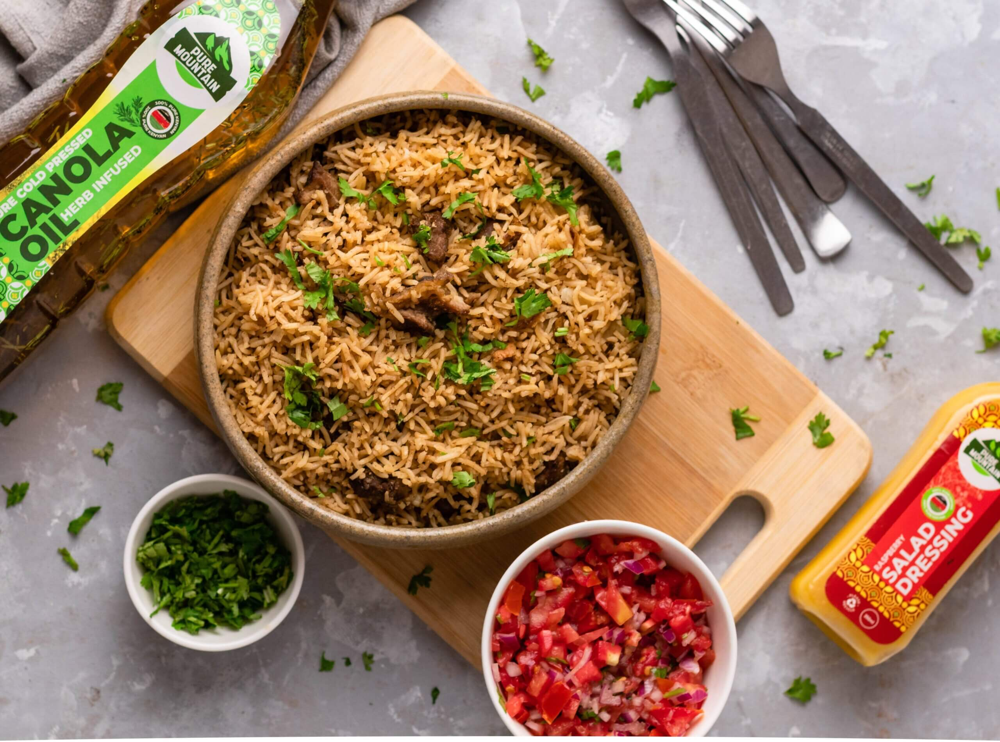

RON'S KITCHEN
Home
breakfast
lunch
dinner
best dish
Pilau

Ingredients:
500g beef
800g of wwhite rice
3 large onions
1/3 cup oil
4 cloves of garlic to be grated
small piece of ginger
chopped coriander
Tomato paste
Pilau masala
1 tablespoon of cumin
4 cinnamon sticks
4 cloves and 22 cardamon
Method:
Step 1-
Chop the meat into pieces, wash, and then boil with some water in a pressure cooker.
Step 2-
After boiling the meat to perfect tenderness, set aside.
Step 3-
In a large pot, heat the oil over medium-high heat.
Step 4-
When the oil is hot, add the chopped onions stirring until golden brown
Step 5-
Add garlic and ginger paste and stir for about a minute.
Step 6-
Add cumin, cardamom, pepper, cinnamon, and cloves.
Step 7-
Add the boiled meat that you had set aside and stir the mixture. Cook until golden brown
Step 8-
Add your tomato paste, stir and then add your washed rice and stir for about two to three minutes.
Step 9-
Add four cups of meat soup or warm tap water
Step 10-
Add salt to taste, stir, cover and cook on medium heat until it is almost dry.
Step 11-
Reduce the heat to low and cook for 12 to 15 minutes.
Step 12-
When the pilau is done, sprinkle some chopped coriander leaves, let it cool for about 10 minutes, then fluff it up.
Step 13-
Serve it with kachumbari and a glass of blended juice.
cooking shows using the recipe
<ifrae/> </div> <div class="video1"> <iframe width="350" height="300" src="https://www.youtube.com/watch?v=2kh9m7VLqho">